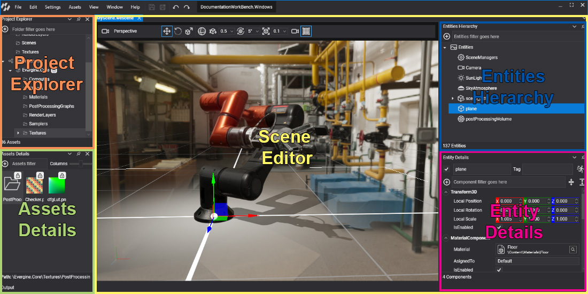

Interface

Evergine Studio's interface uses dockable panels to organize different section so you can create your own layout with the panel location that you prefer. The above image shows the default layout and his main panels are:
- Project Explorer: Is used to manage the assets and packages of the current project.
- Assets Details: Shows the assets of the current folder selected on Project Explorer. Allow you open, rename or create new assets.
- Asset Editor: Is used to edit assets (scenes, materials, textures, etc..). Some asset types, such as scenes, have dedicated editors where you can edit it. To open a dedicated editor (when available), double-click the asset in the Asset Details region.
Asset Editors
Evergine studio has the following editors that allow you manage the associate asset type:
| Editors | Description |
|---|---|
| Scene Editor | Double-clicking a Scene asset opens a dedicated editor. |
| Effect Editor | Double-clicking an Effect asset opens a dedicated editor. |
| Material Editor | Double-clicking a Material asset opens a dedicated editor. |
| Model Editor | Double-clicking a Model asset opens a dedicated editor. |
| Render Layer Editor | Double clicking a RenderLayer asset opens a dedicated editor. |
| Sampler Editor | Double clicking a Sampler asset opens a dedicated editor. |
| Sound Editor | Double clicking a Sound asset opens a dedicated editor. |
| Post-Processing Graph Editor | Double clicking a Post-Processing graph asset opens a dedicated editor. |
Evergine Studio Layout
As we have mentioned earlier, Evergine Studio layout is customizable.
By clicking in the Window menu, you can manage the Evergine Studio layout: